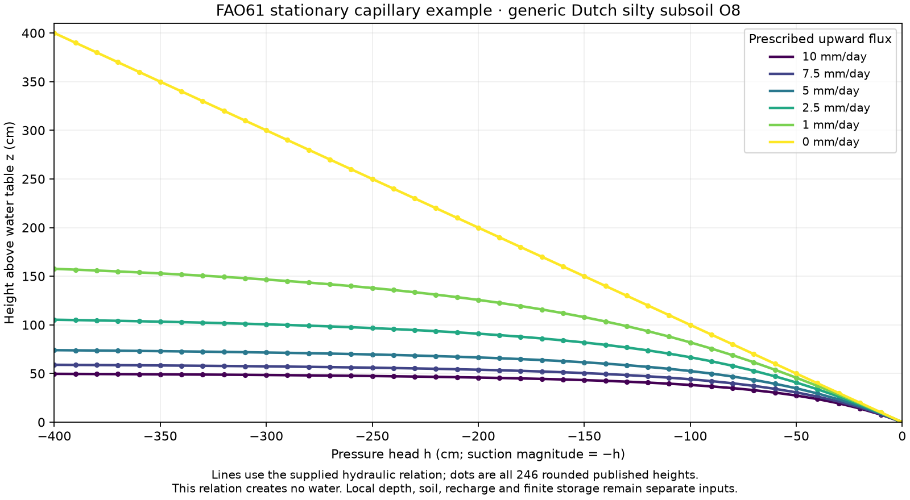

EARTH EVIDENCE · 14 NOVEMBER 2026
Capillary hydraulics matches the published example
All 246 published stationary profile heights agree within their printed rounding. This verifies a supplied-soil relation and source context. It supplies no groundwater, adds no root-zone storage and changes no field or settlement result.
Flux, soil suction and height are distinct inputs
The FAO61 example prescribes six upward fluxes and computes the pressure-head profile for generic Dutch silty subsoil O8. Van Genuchten conductivity and the midpoint Darcy recurrence determine the curves. The rate is not selected by a crop-water deficit, and the soil is not a measured Nile profile.

The zero-flux case is hydrostatic. Conductivity is cm/day while the prescribed flux is mm/day; conversion is explicit. Heights are above the water table, not measured depths below a Nile field.| Flux mm/day | Published z at h=−400 cm | Model z cm | Model−published cm | Within rounding |
|---|
| 10 | 49.7 | 49.670738 | -0.029262 | 41 / 41 |
| 7.5 | 59.0 | 58.964996 | -0.035004 | 41 / 41 |
| 5 | 74.0 | 74.006870 | +0.006870 | 41 / 41 |
| 2.5 | 105.3 | 105.295709 | -0.004291 | 41 / 41 |
| 1 | 157.6 | 157.612130 | +0.012130 | 41 / 41 |
| 0 | 400.0 | 400.000000 | +0.000000 | 41 / 41 |
Historical support does not set a universal rate
Butzer's 1976 discussion on printed page 19 uses Omo, Senegal and Chari–Logone floodplain analogies for prehistoric Nile ecology. Its capillary/high-water-table description is not an observation of Roman Nile groundwater flux. The summer water table of at least 3–4 m on printed page 90 is a summer description; it cannot be inserted as a winter depth.
Butzer 1984 describes high post-flood water tables qualitatively. FAO56 treats capillary input separately in the root-zone water budget and offers an approximate one-metre-below-root convention. Later FAO61 curves depend on soil and boundary conditions; that convention is not a universal hydraulic cutoff.
A field application still needs local hydraulic properties, water-table history, root suction and a finite water budget. Any recharge must come from the same paid river/field system. No unlimited capillary inflow, larger root-zone TAW or inferred crop gain follows from these curves.
All source hydraulic parameter profiles
FAO61 Table A5.4 supplies 28 Dutch topsoil/subsoil parameter sets. These are context-preserved source parameters, not defaults for Egypt. θ values are cm³/cm³; Ksat is cm/day; α is cm⁻¹; connectivity and n are dimensionless. Generated water-content/conductivity samples are evaluations of this model, not extra observations or an exact reproduction of the separate fitted Table A5.3.
| Code | θ residual | θ saturated | Ksat cm/day | α cm⁻¹ | Connectivity | n |
|---|
| B1 | 0.02 | 0.43 | 23.41 | 0.0234 | 0.0 | 1.801 |
| B2 | 0.02 | 0.42 | 12.52 | 0.0276 | -1.06 | 1.491 |
| B3 | 0.02 | 0.46 | 15.42 | 0.0144 | -0.215 | 1.534 |
| B4 | 0.02 | 0.46 | 29.22 | 0.0156 | 0.0 | 1.406 |
| B5 | 0.01 | 0.36 | 52.91 | 0.0452 | -0.359 | 1.933 |
| B7 | 0.0 | 0.4 | 14.07 | 0.0194 | -0.802 | 1.25 |
| B8 | 0.01 | 0.43 | 2.36 | 0.0099 | -2.244 | 1.288 |
| B9 | 0.0 | 0.43 | 1.54 | 0.0065 | -2.161 | 1.325 |
| B10 | 0.01 | 0.43 | 0.7 | 0.0064 | -3.884 | 1.21 |
| B11 | 0.01 | 0.59 | 4.53 | 0.0195 | -5.901 | 1.109 |
| B12 | 0.01 | 0.54 | 5.37 | 0.0239 | -5.681 | 1.094 |
| B13 | 0.01 | 0.42 | 12.98 | 0.0084 | -1.497 | 1.441 |
| B14 | 0.01 | 0.42 | 0.8 | 0.0051 | 0.0 | 1.305 |
| O1 | 0.01 | 0.36 | 15.22 | 0.0224 | 0.0 | 2.286 |
| O2 | 0.02 | 0.38 | 12.68 | 0.0213 | 0.168 | 1.951 |
| O3 | 0.01 | 0.34 | 10.87 | 0.017 | 0.0 | 1.717 |
| O4 | 0.01 | 0.35 | 9.86 | 0.0155 | 0.0 | 1.525 |
| O5 | 0.01 | 0.32 | 25.0 | 0.0521 | 0.0 | 2.374 |
| O6 | 0.01 | 0.33 | 33.92 | 0.0162 | -1.33 | 1.311 |
| O7 | 0.01 | 0.51 | 39.1 | 0.0123 | -2.023 | 1.152 |
| O8 | 0.0 | 0.47 | 9.08 | 0.0136 | -0.803 | 1.342 |
| O9 | 0.0 | 0.46 | 2.23 | 0.0094 | -1.382 | 1.4 |
| O10 | 0.01 | 0.48 | 2.12 | 0.0097 | -1.879 | 1.257 |
| O11 | 0.0 | 0.42 | 13.79 | 0.0191 | -1.384 | 1.152 |
| O12 | 0.01 | 0.56 | 1.02 | 0.0095 | -4.295 | 1.158 |
| O13 | 0.01 | 0.57 | 4.37 | 0.0194 | -5.955 | 1.089 |
| O14 | 0.01 | 0.38 | 1.51 | 0.003 | -0.292 | 1.728 |
| O15 | 0.01 | 0.41 | 3.7 | 0.0071 | 0.912 | 1.298 |
Next dependency
Declare finite paid groundwater recharge/storage and its transfer to the existing soil/river ledger before any new groundwater field experiment. Qualify depths, soil/root/canopy and drainage; preserve the forcing-period/grid limitations and all matched controls. Local phenology, Tigris, shared Earth/fantasy flow and independent regions remain open.
The regional forcing experiment and release-3 settlements remain unchanged. Marketed share 0.3923 remains adopted; whole-empire Egypt calibration still fails.